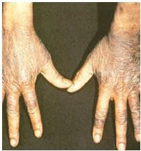
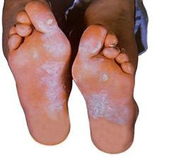

62


Food and Human Nutrition

Form Two
system. Common signs and symptoms of pellagra include loss of appetite, depression, body weakness, diarrhoea, headache, mental confusion, apathy and loss of memory (dementia) as well as sores on the lips, tongue or gums.
Likewise, the person will have scaly skin sores, especially on areas exposed to the sun. Figure 3.6 shows hands affected with pellagra.

Figure 3.6: Hands affected with pellagra
Source: https://discover.hubpages.com/health/
Pellagra-Pictures-Symptoms-Treat-mentCauses
Pellagra can be prevented by using foods rich in niacin. Such foods include meat, fish, milk, eggs, green leafy vegetables and germinated whole cereal grains. It can also be treated by using niacin or nicotinamide supplements.
(v) Beriberi
Beriberi is a deficiency disorder caused by a lack of vitamin B1 (thiamine) in the body. Vitamin B1 supports the normal functioning of the nervous system, heart, and brain. It also plays an important
role in energy metabolism as it helps to convert carbohydrates into energy.
Different signs and symptoms can occur to a person with beriberi. These include weight loss, poor appetite, weak muscles (especially in the legs and ankles) and numbness in the hands and feet. Other signs and symptoms include mental confusion, growth retardation in children and breathlessness, which can cause acute cardiac failure. Beriberi can be prevented by using foods rich in thiamine. These foods include milk, liver, eggs, fish, lean meat, whole cereal grains, green leafy vegetables, legumes, oily seeds and nuts. Figure 3.7 shows feet affected with beriberi.

Figure 3.7: Feet affected with beriberi
(vi) Scurvy
Scurvy results from a severe dietary deficiency of vitamin C (ascorbic acid) in the body. Human body cannot synthesize vitamin C. Therefore, it depends on dietary sources to meet vitamin C requirements. Vitamin C is important for various functions in

17/09/2025 16:30